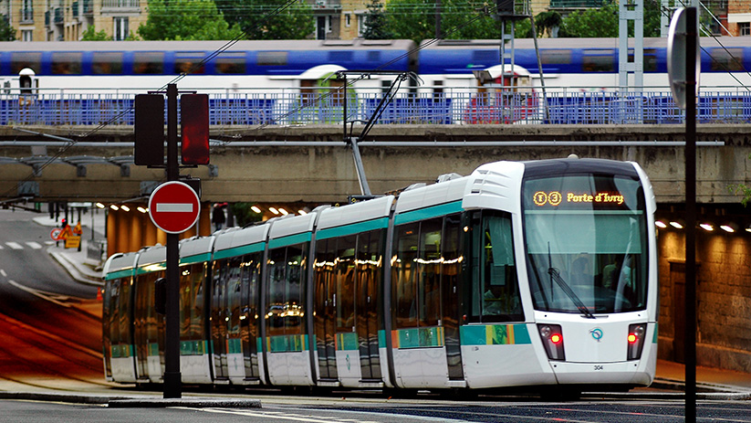

Introduction
Le système de transports parisiens est une toile dynamique qui tisse la mobilité au cœur de la capitale française. De la rapidité emblématique du métro et du RER aux liaisons régionales des TER, en passant par les options internationales du TGV, de l'Eurostar et de l'Eurotunnel, Paris propose une variété de moyens de transport. Les services de covoiturage tels qu'Uber et Bolt, ainsi que les alternatives longue distance comme FlixBus, BlaBlaCar, Ouibus, et Eurolines, complètent ce tableau complexe de mobilité urbaine.
Métro, RER, et Tram : le métro de Paris, avec ses 16 lignes, demeure le pouls du transport intra-urbain, facilitant les déplacements rapides et efficaces à travers la ville. Le RER étend cette toile à travers les banlieues, tandis que le réseau de tramways apporte une dimension supplémentaire en surface, offrant des solutions de transport polyvalentes.
Transilien et Bus : le réseau Transilien s'étend aux confins de la région parisienne, reliant la ville à ses banlieues. Les lignes de bus, complément essentiel, tissent une toile flexible, desservant des zones hors de portée du métro ou du RER, garantissant ainsi une accessibilité accrue.
TGV, Ouigo, TER, et Intercités : les liaisons ferroviaires à grande vitesse du TGV, la formule économique Ouigo, les liaisons régionales du TER, et les trajets plus longs des Intercités forment un réseau ferroviaire complet, connectant Paris à l'ensemble de la France.
Eurostar et Eurotunnel : il assure des liaisons rapides vers Londres, tandis que l'Eurotunnel permet le passage sous la Manche pour les trains et les véhicules routiers, renforçant les connexions transmanche.
Services de Covoiturage, Taxis, et VTC : Uber et Bolt, aux côtés des taxis traditionnels, incarnent la modernité des déplacements urbains, offrant des solutions de covoiturage personnalisées. Les services de VTC répondent à la demande croissante de flexibilité.
Autocars et Covoiturage Longue Distance : FlixBus, BlaBlaCar, Ouibus, et Eurolines complètent le paysage des transports parisiens en offrant des options longue distance économiques et flexibles, élargissant les horizons de la mobilité.
Conclusion
Le système de transports parisiens, riche et diversifié, reflète la complexité et la modernité d'une métropole mondiale. La combinaison de moyens de transport traditionnels et innovants offre une mobilité fluide, contribuant à l'efficacité et à la connectivité de la Ville Lumière. Paris continue de tracer la voie en matière de mobilité urbaine intégrée, prête à relever les défis futurs avec une approche dynamique de la gestion des déplacements.